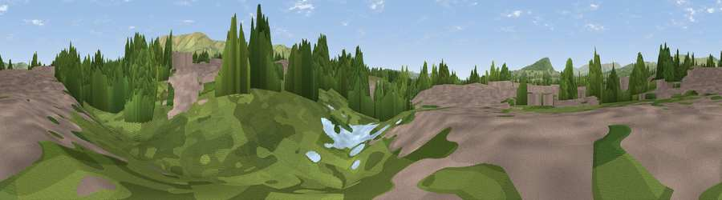

Viewpoint near Clitheroe
#45243 in England · top 100% of its area beats it · near ClitheroeThe view, rendered

A 360° render of this exact spot computed from the terrain model, tree cover and land cover — summer colours, afternoon light, calibrated against photographs of famous viewpoints. Real trees, hedges and buildings will differ in detail.
The panorama
Grey silhouette: terrain skyline in each direction (720 bearings, Earth curvature and refraction included). Dashed green: skyline with trees (+15 m) and buildings (+8 m) as obstacles. Blue strip: how far the ground is visible on each bearing.
Where the view opens
Wedge length = distance to the farthest visible ground on that bearing (vegetation-aware). Rings at 10, 25 and 50 km.
What fills the view
41% grassland · 33% woodland · 26% built-up
Angular shares of the visible panorama (visual magnitude), not map area. Landscape diversity 0.47 (0–1 Shannon).
Key numbers
More beautiful places nearby
The staircase of upgrades: each row has a higher view potential than everything closer. Driving times are estimates from straight-line distance, calibrated against real road routing — check an actual route before setting out.
| Place | Direction | Drive | Score |
|---|---|---|---|
| Viewpoint near Clitheroe | NNE · 1 km | ~3 min | 46.8 |
| Wiswell Moor | SE · 4 km | ~9 min | 71.8 |
| Viewpoint near Pendleton | E · 4 km | ~10 min | 72.1 |
| Viewpoint near Downham | E · 6 km | ~12 min | 75.3 |
| Pendle Hill | E · 7 km | ~14 min | 76.5 |
| Parlick | WNW · 15 km | ~27 min | 77.5 |
| Darwen Hill | SSW · 20 km | ~34 min | 80.7 |
| Rivington Pike | SSW · 29 km | ~45 min | 81.9 |
53.86350, -2.39964 · source: osm viewpoint · position refined by local search. Computed location — check access rights before visiting.